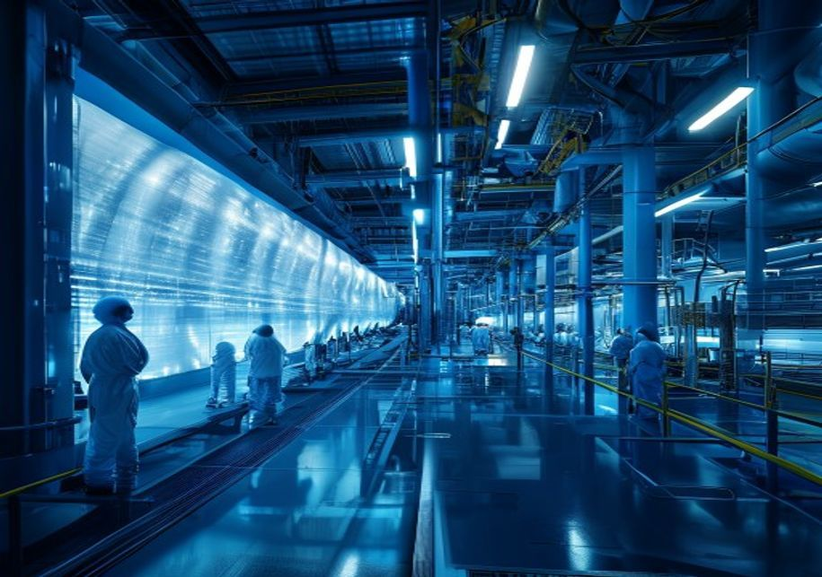

This document is a management consulting and research analysis deliverable for strategy discussion only. It is not professional advisory guidance.
The full source backup is archived in the backup folder.
Nuclear fusion has long been considered the holy grail of clean energy, offering the promise of near-limitless, low-carbon power. In recent years, significant progress has been made toward achieving net energy gain—the point at which a fusion reaction produces more energy than is required to sustain it. In 2022, the National Ignition Facility (NIF) in the United States achieved a net energy gain of 1.5 times the input energy using inertial confinement, marking a historic milestone. However, this was a single-shot experiment, not a sustained reaction, and the path to a commercial power plant remains long.
The most mature approach is magnetic confinement, particularly the tokamak design, which uses powerful magnetic fields to contain plasma. The international ITER project, under construction in France, is the largest tokamak experiment and aims to demonstrate sustained fusion at 500 MW of thermal power. ITER has faced repeated delays and cost overruns; its first plasma is now expected in 2035, with full deuterium-tritium operations not until 2040. Meanwhile, private companies such as Commonwealth Fusion Systems (CFS) and Tokamak Energy are developing compact tokamaks using high-temperature superconducting magnets, which could accelerate timeli.
Alternative designs, including stellarators, field-reversed configurations, and magnetized target fusion, offer potential advantages in stability and simplicity. Stellarators, such as the Wendelstein 7-X in Germany, avoid the plasma disruptions that plague tokamaks but are more complex to build. Private firms like TAE Technologies and General Fusion are pursuing these alternative pathways, with TAE targeting a commercial reactor by 2030. However, none of these designs have yet demonstrated net energy gain at scale.
Key engineering hurdles must be overcome for any fusion design to become commercially viable. Tritium breeding is a critical bottleneck: fusion reactors require tritium as fuel, but natural tritium is scarce and must be bred from lithium in the reactor blanket. The tritium breeding ratio must exceed 1.0 for self-sufficiency, and current designs face significant challenges in achieving this. Additionally, materials must withstand extreme neutron bombardment and heat fluxes, and efficient heat extraction systems are.
Magnetic confinement fusion, particularly the tokamak, is the most studied and funded approach. The ITER project represents the culmination of decades of international collaboration and is designed to produce 500 MW of thermal power from 50 MW of input. However, ITER's timeline has slipped repeatedly; the project was originally scheduled for first plasma in 2020, but now expects 2035. Cost estimates have risen from €5 billion to over €20 billion. Despite these challenges, ITER remains the primary source of data on plasma behavior and materials performance at reactor-relevant scales.
Private companies are pursuing compact tokamaks that could be built faster and at lower cost. Commonwealth Fusion Systems, a spin-out from MIT, is developing the SPARC tokamak using high-temperature superconducting (HTS) magnets, which allow for a smaller, more powerful device. SPARC is expected to demonstrate net energy gain by 2025-2026, and CFS plans to follow with a pilot plant called ARC in the early 2030s. Tokamak Energy in the UK is also developing a compact spherical tokamak, with a goal of achieving net energy gain by 2026. These private efforts benefit from advances in HTS magnet technology, which has matured rapidly in recent year.
Stellarators, such as the Wendelstein 7-X, offer inherent stability and continuous operation, avoiding the plasma disruptions that can occur in tokamaks. However, stellarators are more complex to design and build, and their magnetic confinement is less efficient. The Wendelstein 7-X has achieved plasma temperatures of 100 million degrees Celsius, but has not yet demonstrated net energy gain. Private companies like Type One Energy are exploring stellarator-based designs, but they remain at an earlier stage of devel.
Alternative approaches, including field-reversed configurations (FRC) and magnetized target fusion (MTF), aim to simplify the reactor design. TAE Technologies is developing an FRC-based reactor using a beam-driven approach, and has achieved plasma temperatures of 75 million degrees Celsius. General Fusion is pursuing MTF, which compresses a magnetized plasma using pistons. Both companies claim they can achieve net energy gain by the late 2020s, but they have not yet demonstrated the necessary plasma confinement an.
The levelized cost of energy (LCOE) from fusion is highly uncertain, as no commercial fusion plant has ever been built. Early estimates from the Fusion Industry Association and academic studies suggest that first-of-a-kind fusion plants could have LCOE in the range of $50-100 per MWh, assuming successful demonstration and cost reduction. This would make fusion competitive with nuclear fission ($60-120/MWh) and some renewables like offshore wind ($40-80/MWh), but more expensive than solar and onshore wind ($20-40/MWh) in many regions. However, these projections are based on optimistic assumptions about capital costs, capacity factors, and fue.
Capital costs are the dominant factor in fusion LCOE. A commercial fusion plant is expected to cost $5-10 billion for a 1 GW facility, similar to large fission reactors. However, compact designs using HTS magnets could reduce costs to $2-3 billion, according to CFS. Operation and maintenance costs are expected to be lower than fission due to the absence of long-lived radioactive waste, but tritium handling and periodic component replacement will add costs. Fuel costs are minimal, as deuterium is abundant and tritium can be bred from lithium, but the initial tritium inventory will be expensive.
Comparison with other energy sources must account for system-level costs, including grid integration and backup power. Fusion plants are expected to operate as baseload power, similar to fission, with capacity factors of 90% or more. This could provide a valuable complement to variable renewables, reducing the need for storage and backup. However, if fusion costs remain higher than renewables plus storage, its market share may be limited. The cost of storage is declining rapidly, and by the 2040s, solar-plus-stora.
Regulatory and licensing pathways are underdeveloped and pose a significant timeline risk. No country has a comprehensive licensing framework for fusion, and existing fission regulations may not be directly applicable. The U.S. Nuclear Regulatory Commission (NRC) is developing a framework for fusion, but it is not expected to be finalized until 2027. In the UK, the government has proposed a regulatory regime that treats fusion differently from fission, but legislation is still pending. Delays in licensing could pu.
The widespread deployment of fusion energy could fundamentally alter global energy geopolitics. Fusion fuel—deuterium and lithium—is abundant and widely distributed, reducing the strategic importance of fossil fuel reserves. Countries that are currently net energy importers, such as Japan, South Korea, and many European nations, could achieve energy independence, reducing their vulnerability to supply disruptions and price volatility. This would weaken the geopolitical influence of major fossil fuel exporters, including OPEC+ countries and Russia.
Fusion could also reduce the need for long-distance energy transportation, as plants can be built near demand centers. This would lower infrastructure costs and reduce the risk of supply chain disruptions. However, fusion plants will require significant amounts of cooling water, which could limit their deployment in arid regions. Additionally, the production of high-temperature superconducting magnets requires rare earth elements, which are currently concentrated in China. This could create new dependencies and strategic vulnerabilities.
National security implications include the potential for dual-use technologies. Fusion research and development can contribute to nuclear weapons expertise, particularly in tritium handling and neutronics. The spread of fusion technology could raise proliferation concerns, especially if small-scale reactors become widely available. International safeguards and export controls will need to be updated to address these risks. The ITER project includes provisions for non-proliferation, but private companies may not be.
Market disruption risks are significant, particularly for incumbent energy industries. Fossil fuel companies may resist fusion deployment through lobbying, litigation, or delaying grid access. Nuclear fission utilities may also view fusion as a competitor, especially if fusion offers lower costs and less waste. However, some fission companies are investing in fusion as a long-term hedge. The pace of disruption will depend on the cost trajectory of fusion relative to other technologies, as well as policy support an.
Given the high uncertainty in technology pathways and timelines, a diversified investment strategy is recommended. Investors should allocate capital across multiple fusion approaches, including magnetic confinement (tokamaks and stellarators), inertial confinement, and alternative designs. This reduces the risk of backing a single technology that may fail to achieve commercial viability. Leading private firms such as Commonwealth Fusion Systems, TAE Technologies, General Fusion, and Tokamak Energy represent different approaches and are at various stages of development.
Early partnerships with these firms can provide strategic advantages, including access to intellectual property, talent, and first-mover positioning. Corporate venture arms of energy and technology companies, such as Equinor, Google, and Bill Gates' Breakthrough Energy Ventures, have already invested in fusion startups. These partnerships can also help shape the regulatory environment and demonstrate commercial interest to policymakers. Joint ventures with utilities could facilitate pilot plant deployment and grid integration.
The intellectual property landscape is evolving rapidly, with hundreds of patents filed globally. Key areas of IP include magnet design, plasma control, tritium breeding, and heat extraction. Barriers to entry are high due to the need for specialized expertise, advanced manufacturing, and significant capital. However, the open-source nature of some fusion research, particularly from ITER and national labs, provides a foundation for new entrants. Investors should conduct thorough due diligence on IP portfolios and.
Risk mitigation requires clear milestones and exit options. Investments should be structured with staged funding tied to technical achievements, such as net energy gain, pilot plant construction, and commercial reactor licensing. This allows investors to reassess and exit if milestones are missed. Timeline delays are the most likely risk, as fusion projects have historically taken longer than expected. Technical failures, such as inability to achieve sustained net energy gain or tritium self-sufficiency, could als.
The absence of a clear regulatory framework for fusion energy is a major barrier to commercialization. Fusion plants are currently subject to nuclear fission regulations in most countries, which are designed for a different technology with different risks. Fusion reactors produce no long-lived high-level waste and cannot undergo a runaway chain reaction, so they pose a lower safety risk. However, they still involve radioactive materials (tritium) and neutron activation of structural components, requiring robust safety and security measures.
The U.S. Nuclear Regulatory Commission (NRC) is developing a regulatory framework for fusion, with a proposed rule expected in 2027. The NRC has indicated that fusion should be regulated separately from fission, with a focus on radiological safety rather than criticality safety. However, the timeline for finalizing the rule and licensing the first plant is uncertain. In the UK, the government has proposed a regulatory regime that treats fusion as a separate category, with the Environment Agency and the Health and Safety Executive responsible for oversight. Legislation is expected in 2025-2026.
Other countries, including Japan, South Korea, and France, are also developing fusion-specific regulations, but progress is uneven. The International Atomic Energy Agency (IAEA) has published safety guidelines for fusion, but these are not binding. The lack of harmonized international standards could complicate the deployment of fusion plants across borders and increase costs for developers. First-of-a-kind plants may face lengthy licensing processes, potentially adding 5-10 years to the commercialization timeline.
Investors and developers should engage proactively with regulators to shape the framework and demonstrate safety. Early engagement can help identify regulatory requirements and reduce uncertainty. Public acceptance is also critical; fusion must be perceived as safe and beneficial to gain community support. Communication strategies should emphasize the low-risk profile of fusion compared to fission and the potential for clean, baseload power.
Tritium is a key fuel for deuterium-tritium (D-T) fusion reactions, which are the most likely to be used in first-generation commercial reactors. However, tritium is radioactive with a half-life of 12.3 years and does not occur naturally in significant quantities. Current global tritium stocks are limited, primarily produced as a byproduct in CANDU fission reactors. These stocks are sufficient for experimental reactors like ITER, but not for a fleet of commercial fusion plants.
To achieve commercial viability, fusion reactors must breed tritium from lithium using neutrons produced in the fusion reaction. The tritium breeding ratio (TBR) must be greater than 1.0 to sustain the reactor and provide start-up inventory for new plants. Current designs for tritium breeding blankets face significant engineering challenges, including neutronics, materials compatibility, and heat extraction. Several blanket concepts are being studied, including solid lithium ceramics, liquid lithium-lead, and molten salt blankets, but none have been tested at reactor-relevant conditions.

The timeline for developing and validating tritium breeding technology is uncertain. ITER will test several blanket modules, but full-scale breeding blankets will not be deployed until the 2040s. Private companies are also working on breeding solutions, but details are often proprietary. The Fusion Industry Association has identified tritium breeding as a top priority for R&D. Without a reliable tritium supply, fusion cannot achieve commercial scale, and the industry may need to rely on external tritium sources fo.
Alternative fuel cycles, such as deuterium-deuterium (D-D) or deuterium-helium-3 (D-He3), could avoid the tritium issue, but they require much higher plasma temperatures and are more difficult to achieve. D-D fusion produces tritium as a byproduct, but the reaction rate is lower, and the neutron flux is still significant. D-He3 fusion is aneutronic, reducing activation and waste, but helium-3 is rare on Earth. These alternative cycles are unlikely to be commercially viable in the near term, making tritium breeding.
The potential for fusion to disrupt existing energy markets is significant, and incumbent industries are likely to respond. Fossil fuel companies, particularly those with large reserves of oil, gas, and coal, may view fusion as a long-term threat to their business models. They could use their political influence to lobby against subsidies for fusion, advocate for regulatory barriers, or delay grid access. In the United States, the oil and gas industry has historically opposed policies that support renewable energy, and similar dynamics could apply to fusion.
Nuclear fission utilities may also resist fusion, as it could compete for investment and market share. However, some fission companies are exploring fusion as a complementary technology, particularly for waste reduction and safety improvements. The fission industry may also benefit from fusion R&D in areas such as materials and plasma physics. The response of incumbents will depend on the perceived threat level and the speed of fusion deployment.
Policy support will be critical to overcoming incumbent resistance. Governments can provide funding for fusion R&D, tax incentives for early adopters, and streamlined regulatory pathways. Public-private partnerships, such as the U.S. Department of Energy's Fusion Energy Sciences program and the UK's Fusion Strategy, can help de-risk technology and attract private investment. International collaboration, as exemplified by ITER, can also accelerate progress and share costs.
Market disruption risks are not limited to incumbents; fusion developers themselves face challenges in scaling up. The transition from demonstration to commercial deployment is often called the 'valley of death,' where funding gaps can stall progress. The Fusion Industry Association estimates that $50 billion or more in additional investment may be needed to bridge this gap. Investors should be prepared for long holding periods and potential dilution. Strategic partnerships with utilities, engineering firms, and g.
Fusion technology has dual-use potential, as the same knowledge and equipment used for civilian fusion can be applied to nuclear weapons research. Tritium, a key fusion fuel, is also used in nuclear weapons to boost yield. The spread of fusion expertise could facilitate the development of nuclear weapons by states or non-state actors. International safeguards, such as those implemented by the IAEA, will need to be extended to fusion facilities, but the current framework is designed for fission reactors and may not be directly applicable.
Export controls on fusion-related technology are already in place under the Nuclear Suppliers Group (NSG) guidelines. However, as fusion technology becomes more commercialized, the risk of proliferation may increase. Small-scale fusion reactors, if they become widely available, could be used to produce tritium or other materials for weapons. The international community will need to develop new norms and agreements to address these risks, balancing the benefits of clean energy with security concerns.
National security implications also include energy independence and resilience. Countries that develop fusion technology could reduce their dependence on imported energy, enhancing their strategic autonomy. However, the concentration of rare earth supply chains for magnets and cooling systems could create new dependencies. For example, China dominates the production of rare earth elements, which are critical for HTS magnets. This could create strategic vulnerabilities for countries reliant on imports.
To mitigate proliferation risks, governments should invest in safeguards research and development, and ensure that fusion projects adhere to non-proliferation norms. International cooperation, such as through the IAEA, can help establish best practices and monitoring mechanisms. Private companies should also adopt voluntary safeguards and transparency measures to build trust and reduce security concerns.